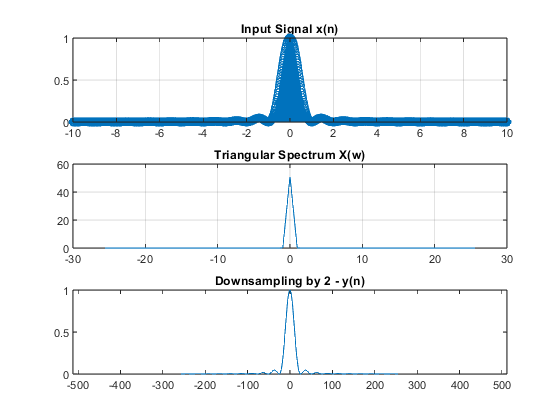
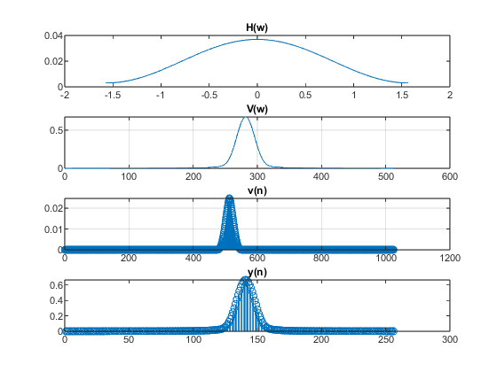

N=1024;
t=linspace(-10,10,N);
filter_order=30;
D=2;
inp_sig=sinc(t).^2;
figure(1);
subplot(3,1,1);
stem(t,inp_sig);
grid on;
title('Input Signal x(n)');
n=-N/(2*D):1:(N/(2*D))-1;
Xw=(fft(inp_sig,N));
Xw_mod=fftshift(Xw);
Fs_original = 1 / (t(2) - t(1));
f = (-N/2:N/2-1) * (Fs_original / N);
subplot(3,1,2);
plot(f, abs(Xw_mod));
grid on;
title('Triangular Spectrum X(w)');
y_decimation=decimate(inp_sig,D,filter_order,"fir");
grid on;
subplot(3,1,3);
plot(n,y_decimation);
title('Downsampling by 2 - y(n)');
xlim([-N/2 N/2]);
fs=1000;
fc=pi/D;
lpf_order=50;
fc_normalized=fc/(fs*2);
low_pass_filter=fir1(lpf_order,fc_normalized,"low");
t_filter=linspace(-(pi/D),(pi/D),length(low_pass_filter));
figure(2);
grid on;
subplot(4,1,1);
plot(t_filter,low_pass_filter);
title('H(w)');
v=filter(low_pass_filter,1,abs(y_decimation));
subplot(4,1,2);
plot(abs(v));
title('V(w)');
grid on;
subplot(4,1,3);
stem(abs(ifftshift(ifft(v,N))));
title('v(n)');
y2_decimated=decimate(v,D);
grid on;
subplot(4,1,4);
stem(y2_decimated);
title('y(n)');
 